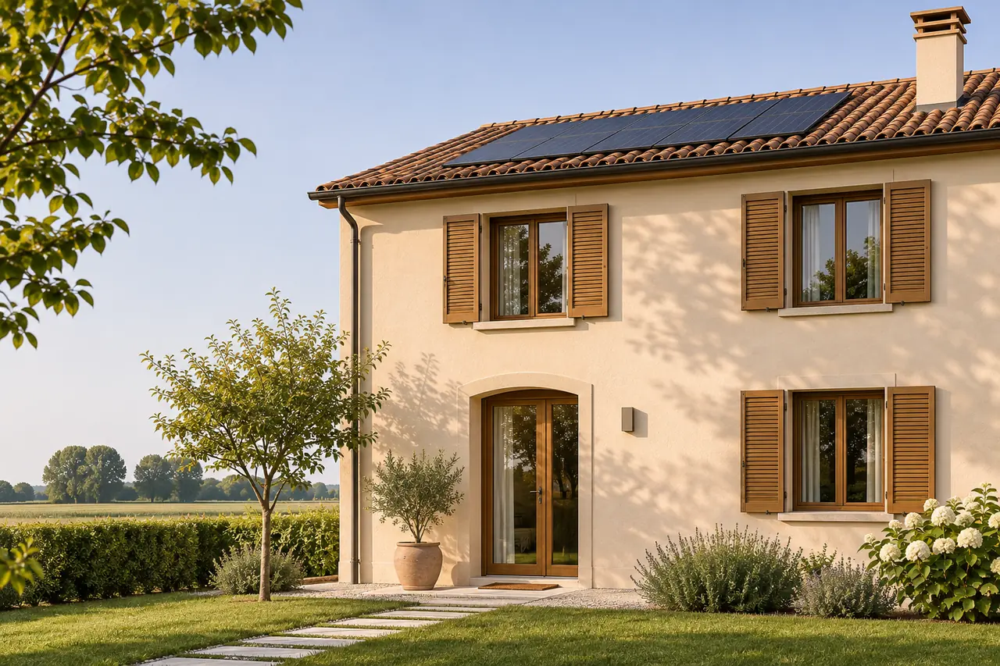
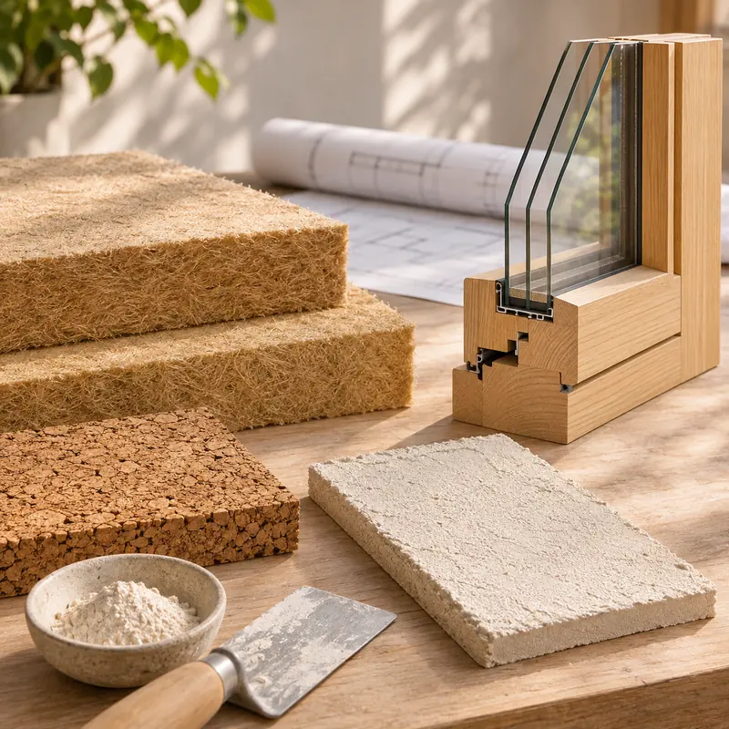

Riqualificazione energetica a Mantova
Rendo la tua casa più efficiente e confortevole, rispettandone il carattere. Anche quando è un edificio storico.
Primo incontro conoscitivo gratuito e senza impegno.
Meno consumi, più comfort
Molte case del mantovano sono state costruite quando l’energia costava poco: muri senza isolamento, serramenti che lasciano passare aria, impianti datati. Una riqualificazione ben progettata interviene su involucro e impianti in modo coordinato, così ogni lavoro rende al massimo.
Mi occupo anche di recupero di edifici storici, dove l’efficienza va ottenuta con soluzioni compatibili con murature antiche, intonaci a calce e vincoli di tutela.

Su cosa intervengo
Analisi dello stato di fatto
Sopralluogo, rilievo e valutazione dei punti in cui la casa disperde energia, con i tecnici specializzati quando serve.
Involucro e serramenti
Cappotto o isolamento interno, coperture, nuovi serramenti e cura dei ponti termici, anche con materiali naturali.
Impianti e rinnovabili
Scelgo con il termotecnico riscaldamento, ventilazione e fotovoltaico adatti alla casa e a come la usi.
Il mio approccio
- Visione d’insieme
- Involucro, impianti e spazi progettati insieme, non un intervento alla volta a caso.
- Bioedilizia
- Materiali traspiranti e naturali, sani per chi abita la casa.
- Rispetto dell’esistente
- Soluzioni compatibili con gli edifici storici e con il loro carattere.
- Pratiche e agevolazioni
- Ti indico le agevolazioni in vigore e preparo la documentazione tecnica, in accordo con il tuo commercialista.
Come si svolge una riqualificazione
Sopralluogo e diagnosi
Capisco come è fatta la casa, come la usi e dove perde energia.
Progetto degli interventi
Definisco cosa fare e con quali priorità, anche per fasi.
Pratiche e documentazione
Preparo le pratiche edilizie e la documentazione per le agevolazioni.
Direzione lavori
Seguo il cantiere e verifico che ogni intervento sia eseguito a regola d’arte.
Costi e tempi indicativi
Ogni casa parte da una situazione diversa, per questo non indico una percentuale generica. Dopo il sopralluogo ti preparo un preventivo scritto, distinto per fasi se decidi di procedere un passo alla volta.
Le cifre sono indicative e servono a orientarti: ogni progetto ha il suo preventivo.
- Diagnosi e progetto
- da definire dopo il sopralluogo
- Lavori
- secondo gli interventi scelti
Domande frequenti
Da dove si comincia per riqualificare una casa?
Da una diagnosi: capire come è costruita, dove disperde energia e come la usi. Solo dopo si decide cosa fare e in che ordine. Isolare senza aver valutato serramenti e ventilazione, per esempio, può creare problemi di condensa.
Si può migliorare l’efficienza di una casa storica?
Sì, con soluzioni compatibili: isolanti traspiranti, intonaci a calce, serramenti adatti all’edificio, impianti poco invasivi. Sugli edifici vincolati ogni intervento va concordato con la Soprintendenza.
Meglio il cappotto esterno o l’isolamento interno?
Il cappotto esterno è spesso la soluzione più efficace, ma non sempre è possibile: facciate di pregio, vincoli o distanze possono imporre l’isolamento interno. La scelta dipende dall’edificio, e la valutiamo insieme dopo il sopralluogo.
Ci sono incentivi per la riqualificazione energetica?
Le agevolazioni cambiano spesso. Ti indico quelle in vigore al momento dei lavori e preparo la documentazione tecnica necessaria, in accordo con il tuo commercialista.
Posso fare i lavori un po’ alla volta?
Sì, se c’è un piano. Definiamo insieme le priorità, così ogni intervento prepara quello successivo invece di ostacolarlo.
Richiedi un sopralluogo
Dimmi che casa è e cosa ti preoccupa: freddo, umidità, bollette. Ti ricontatto per fissare un incontro.